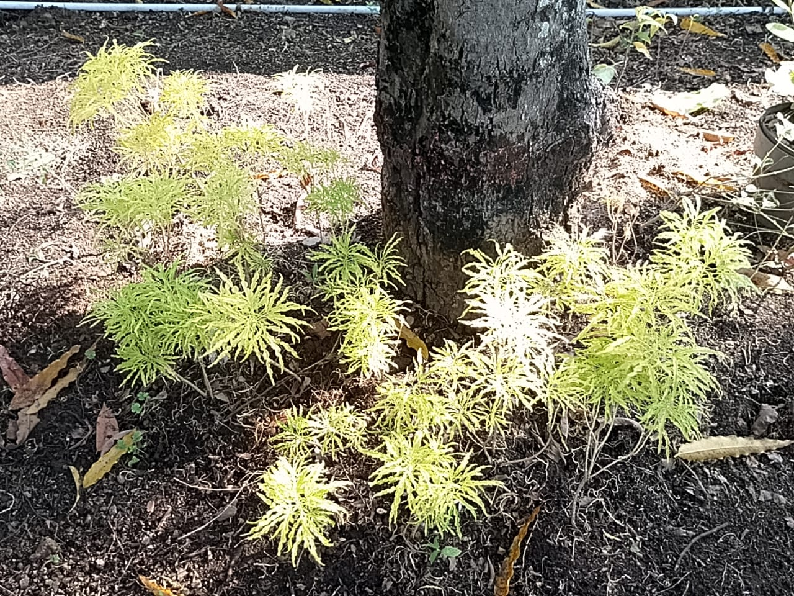

Brokoli Kuning (Golden False Aralia)

Sejarah Tanaman Brokoli Kuning
Tanaman brokoli kuning, atau dikenal sebagai Golden False Aralia (Euodia ridleyi), adalah tanaman hias semak yang daunnya berwarna kuning dan rimbun menyerupai brokoli hijau,
sehingga mendapatkan nama "brokoli hias". Tanaman ini bukanlah sayuran brokoli yang umum dikonsumsi, melainkan kerabat jeruk-jerukan yang digunakan untuk mempercantik taman atau pekarangan. Sejarah spesifik mengenai tanaman ini tidak banyak ditemukan,
namun asal-usulnya dapat dikaitkan dengan famili Euodia atau Acalypha, seperti yang ditunjukkan oleh nama ilmiahnya
Klasifikasi Ilmiah
- Nama Lokal: Brokoli Kuning
- Nama Ilmiah: Euodia Ridleyi atau Acalypha Ridleyi
- Famili: Rutaceae.
- Kerajaan: Plantae
- Divisi: Eukaryota
- Ordo: Sapindales
Manfaat Brokoli Kuning
- Serat inggi: bantu pencernaan agar tidak menjadi drama toilet
- Vitamin C & mineral: masih mengandung vitamin C, kalsium, zat besi, serta beberapa antioksidan meski jumlahnya berkurang
- Mendukung sistem kekebalan tubuh: Kandungan vitamin dan senyawa fitonutrien dapat membantu tubuh melawan radikal bebas
- Menjaga kesehatan tulang: kalsium dan vitamin K pada brokoli bermanfaat bagi kepadatan tulang
Ciri-ciri Lidah Mertua
- Daun: Berwarna kuning kehijauan yang cerah, rimbun, ramping, dan mengilap. Ketika terpapar sinar matahari penuh, warna kuningnya akan menjadi semakin terang.
- Batang: Tumbuh lurus, berkayu, dan memiliki banyak cabang.
- Bentuk dan Ukuran: Merupakan tanaman semak yang tumbuh tegak, dengan rumpun yang rapat dan liat. Tinggi tanaman bisa mencapai 120 cm dan diameter tajuknya bisa sekitar 45 cm.
- Bunga: Tanaman ini tidak menghasilkan bunga.
- Kondisi Pertumbuhan: Mampu hidup di tempat yang terkena sinar matahari langsung atau tempat yang teduh.
Sumber Informasi